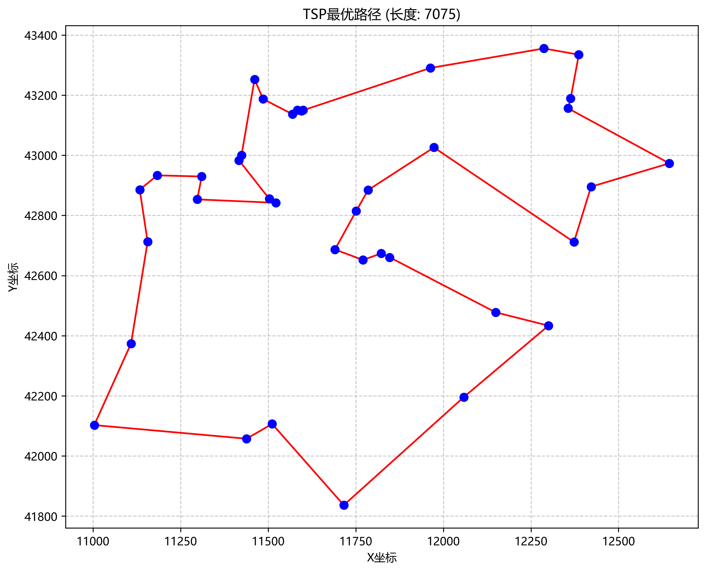
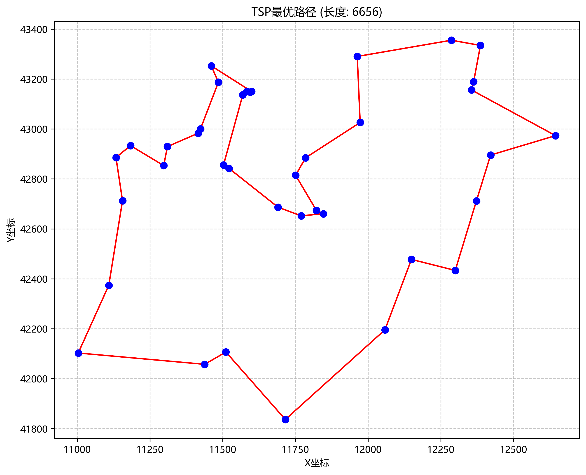
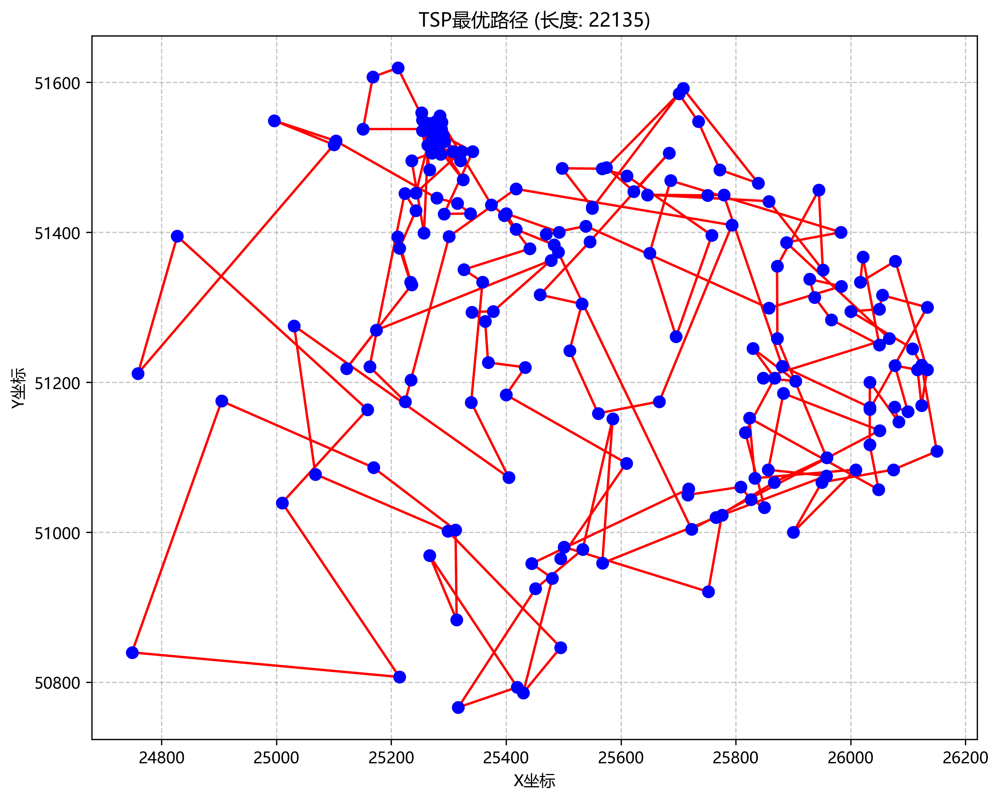
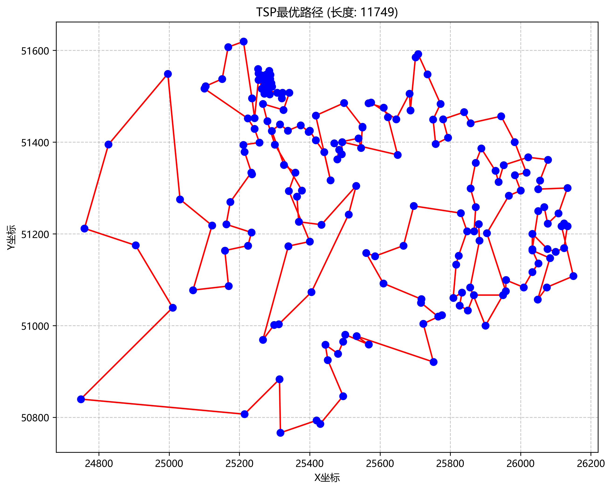
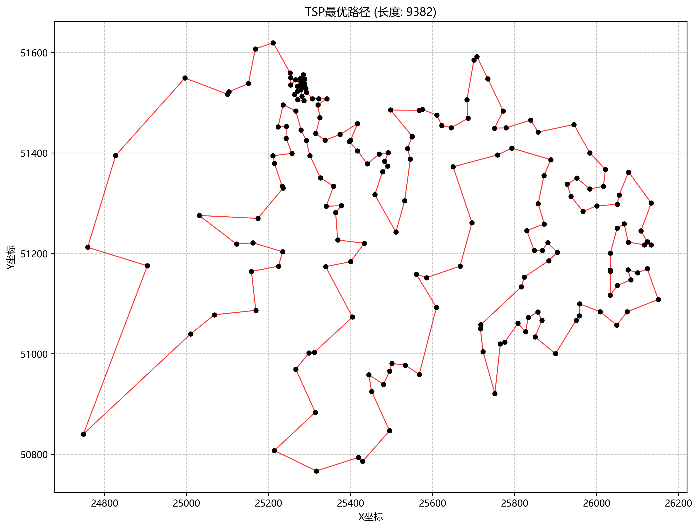

中山大学计算机学院
| 学号 | xxxxxxxx | 姓名 | xxx |
本实验旨在通过编程实现搜索算法。具体包括： 1. 使用启发式搜索算法（A*算法与IDA*算法）解决 15-Puzzle问题； 2. 使用高级搜索算法（遗传算法 GA）求解旅行商问题（TSP）。
（1）启发式搜索 (A* & IDA*)：
A* 算法通过评估函数 f(n) = g(n) + h(n) 来引导搜索。其中 g(n) 是从初始节点到当前节点的实际代价，h(n) 是当前节点到目标节点的估计代价。本实验采用曼哈顿距离作为启发式函数 h(n)，因其满足可采纳性。本算法在搜索方式上类似于BFS，但通过启发式函数有效剪枝，通过一个优先队列维护待搜索节点，有效节省了时间开销，但在状态空间过大时可能导致内存溢出。
IDA* 算法（迭代加深 A*）结合了深度优先搜索的空间优势和 A* 的启发式引导。它设置一个f值阈值，在阈值内进行 DFS，若未找到解则增加阈值继续迭代，有效解决了 A* 在处理大规模状态空间时内存溢出的问题。
（2）遗传算法 (Genetic Algorithm)：
遗传算法模拟生物进化过程。对于 TSP 问题，将城市序列编码为“染色体”。通过锦标赛选择选取优秀个体，利用顺序交叉 (Order Crossover) 产生后代以维持路径完整性，通过逆转变异 (Inversion Mutation) 增加种群多样性。算法通过不断的迭代演化，最终趋向于问题的全局最优路径。
A* & IDA*
（1）可解性判定：
# 利用逆序数奇偶性判断是否有解
def is_solvable(state):
inv = 0
q = [x for x in state if x != 0]
for i in range(len(q)):
for j in range(i + 1, len(q)):
if q[i] > q[j]: inv += 1
cur_row = state.index(0) // 4
man_dis = abs(3 - cur_row) # 考虑空位到目标的纵向距离
return abs(inv - man_dis) % 2
（2）启发函数h(n)：
# 计算曼哈顿距离作为启发值h
def manhattan_distance(self):
h = 0
for idx, num in enumerate(self.state):
if num == 0: continue
cur_x, cur_y = idx // 4, idx % 4
target_x, target_y = TARGET_POS[num]
h += abs(target_x - cur_x) + abs(target_y - cur_y)
return h
（3）A*主函数：
首先判断初始状态是否可解，随后开始进行求解。通过维护一个优先队列，使得选取下一个搜索状态时局部最优；通时构建一个状态搜索集，跳过重复状态。有效提高了搜索效率。
def A_star(test):
# 首先判断是否有解
if not is_solvable(test):
print("该测试样例无解")
return None
start_node = Node(test)
open_heap = []
heapq.heappush(open_heap,start_node)
closed_set = set()
while open_heap:
cur_node = heapq.heappop(open_heap)
if(cur_node.state == TARGET):
print_solution(cur_node)
return cur_node
if cur_node.state in closed_set:
continue
closed_set.add(cur_node.state)
for neighbor in get_neighbors(cur_node):
if neighbor.state not in closed_set:
heapq.heappush(open_heap, neighbor)
print("未找到解")
return None
（4）IDA*递归算法：
同样构建了一个状态搜索集来跳过重复状态。但是IDA*设置了一个阈值，每次递归时选取评估函数不超过阈值的状态进行搜索，保证了当下搜索的最优性。
def dfs(node, limit, path_set):
# 总代价超过阈值，剪枝，返回当前f值作为候选阈值
if node.f > limit:
return (False, node.f, None)
if node.state == TARGET:
return (True, limit, node)
min_next_limit = float('inf')
neighbors = get_neighbors(node)
neighbors.sort(key=lambda x: x.f)
for neighbor in neighbors:
if neighbor.state in path_set:
continue
path_set.add(neighbor.state)
found, next_limit, sol_node = dfs(neighbor, limit, path_set)
if found:
return (True, next_limit, sol_node)
if next_limit < min_next_limit:
min_next_limit = next_limit
path_set.remove(neighbor.state)
return (False, min_next_limit, None)
遗传算法
（1）TSP 遗传算法进化逻辑：
首先将当前种群内所有个体按照适应度（路径长度倒数）排序，然后保留适应度最高的两个作为精英个体，接着通过锦标赛选择不断选取成对父代进行交叉变异生成新的子代，直到规模达到目标种群大小。
# 进化：选择-交叉-变异-保留 def _evolve(self, population): # 按适应度排序 population.sort(key=lambda x: self._fitness(x), reverse=True) new_population = [] # 精英保留 new_population.extend(population[:self.elite_size]) # 填充剩余个体 while len(new_population) < self.pop_size: # 选择父代 parent1 = self._tournament_selection(population) parent2 = self._tournament_selection(population) # 交叉 if random.random() < self.crossover_rate: child = self._order_crossover(parent1, parent2) else: child = parent1.copy() # 变异 if random.random() < self.mutation_rate: child = self._inversion_mutation(child) new_population.append(child) return new_population
（2）锦标赛选择：
# 锦标赛选择，选取三条随机路径中最好一条
def _tournament_selection(self, population, tournament_size=3):
tournament = random.sample(population, tournament_size)
tournament.sort(key=lambda x: self._fitness(x), reverse=True)
return tournament[0]
（3）交叉：
# 顺序交叉
def _order_crossover(self, parent1, parent2):
size = self.num_cities
start, end = sorted(random.sample(range(size), 2))
child = [None] * size
child[start:end] = parent1[start:end]
ptr = end
for city in parent2:
if city not in child:
if ptr >= size:
ptr = 0
child[ptr] = city
ptr += 1
return child
（4）变异：
# 逆转变异，随机反转一条路径
def _inversion_mutation(self, individual):
start, end = sorted(random.sample(range(self.num_cities), 2))
individual[start:end] = reversed(individual[start:end])
return individual
（5）2-opt局部搜索：
def _two_opt(self, route, max_attempts=500):
best_route = route.copy()
improved = True
attempts = 0
while improved and attempts < max_attempts:
improved = False
for i in range(1, self.num_cities - 2):
for j in range(i + 1, self.num_cities):
if j - i == 1: continue
# 计算交换前后的距离变化
# A -> B, C -> D 变为 A -> C, B -> D
A, B = best_route[i - 1], best_route[i]
C, D = best_route[j - 1], best_route[j] if j < self.num_cities else best_route[0]
old_dist = self.dist_matrix[A][B] + self.dist_matrix[C][D]
new_dist = self.dist_matrix[A][C] + self.dist_matrix[B][D]
if new_dist < old_dist:
best_route[i:j] = reversed(best_route[i:j])
improved = True
attempts += 1
if not improved: break
return best_route
（1）状态剪枝与预判：在解决 15-Puzzle 时，首先通过逆序数性质判断初始状态是否可解，避免了对无解状态的无效搜索。
（2）内存与速度权衡：实现了 IDA* 算法。相较于 A*，IDA* 显著降低了空间复杂度，使其能够处理搜索深度更深的问题。
（3）精英保留策略：在遗传算法中，通过 elite_size 参数直接将当前代最优秀的个体保留至下一代，防止进化过程中的退化现象，加速收敛。
（4）2-opt局部搜索：针对遗传算法的特性，对每一次迭代得到的最优路径进行2-opt局部优化，有效减少了路径长度。
15-Puzzle 测试结果：
test = (2,13,4,10,6,14,0,5,3,1,8,12,9,15,7,11) 最优解步数:45 # A*算法 运行时间 1 :12.486702 s 运行时间 2 :11.992512 s 运行时间 3 :11.979041 s # IDA*算法 运行时间 1 :7.691482 s 运行时间 2 :7.749759 s 运行时间 3 :7.861407 s
TSP (dj38.tsp) 求解结果：
正在读取文件: dj38.tsp
城市数量: 38
正在计算距离矩阵...
开始运行遗传算法...
种群数量：150 迭代次数：1000 交叉概率：0.8 变异概率：0.15 精英保留数：2
迭代 50/1000 | 当前最优路径长度: 11560
迭代 100/1000 | 当前最优路径长度: 9371
迭代 150/1000 | 当前最优路径长度: 8408
迭代 200/1000 | 当前最优路径长度: 7454
迭代 250/1000 | 当前最优路径长度: 7356
迭代 300/1000 | 当前最优路径长度: 7261
迭代 350/1000 | 当前最优路径长度: 7108
迭代 400/1000 | 当前最优路径长度: 7105
迭代 450/1000 | 当前最优路径长度: 7075
迭代 500/1000 | 当前最优路径长度: 7075
迭代 550/1000 | 当前最优路径长度: 7075
迭代 600/1000 | 当前最优路径长度: 7075
迭代 650/1000 | 当前最优路径长度: 7075
迭代 700/1000 | 当前最优路径长度: 7075
迭代 750/1000 | 当前最优路径长度: 7075
迭代 800/1000 | 当前最优路径长度: 7075
迭代 850/1000 | 当前最优路径长度: 7075
迭代 900/1000 | 当前最优路径长度: 7075
迭代 950/1000 | 当前最优路径长度: 7075
迭代 1000/1000 | 当前最优路径长度: 7075
求解完成！最优路径长度: 7075
最优路径（城市编号）:
32 → 30 → 26 → 25 → 23 → 20 → 22 → 24 → 28 → 35 → 37 → 38 → 33 → 34 → 36 → 31 → 27 → 19 → 18 → 17 → 16 → 12 → 11 → 9 → 8 → 13 → 15 → 6 → 7 → 5 → 3 → 4 → 2 → 1 → 10 → 14 → 21 → 29 → 32
10.394054200034589 s

由于遗传算法的随机性。TSP的结果绘有一定的波动。通过增加种群数量和迭代次数，可以进一步提高找到全局最优解的概率。
正在读取文件: dj38.tsp
城市数量: 38
正在计算距离矩阵...
开始运行遗传算法...
种群数量：150 迭代次数：1000 交叉概率：0.8 变异概率：0.15 精英保留数：2
迭代 50/1000 | 当前最优路径长度: 11352
迭代 100/1000 | 当前最优路径长度: 8376
迭代 150/1000 | 当前最优路径长度: 7732
迭代 200/1000 | 当前最优路径长度: 7434
迭代 250/1000 | 当前最优路径长度: 7293
迭代 300/1000 | 当前最优路径长度: 7293
迭代 350/1000 | 当前最优路径长度: 7110
迭代 400/1000 | 当前最优路径长度: 7063
迭代 450/1000 | 当前最优路径长度: 7001
迭代 500/1000 | 当前最优路径长度: 6898
迭代 550/1000 | 当前最优路径长度: 6761
迭代 600/1000 | 当前最优路径长度: 6729
迭代 650/1000 | 当前最优路径长度: 6719
迭代 700/1000 | 当前最优路径长度: 6719
迭代 750/1000 | 当前最优路径长度: 6666
迭代 800/1000 | 当前最优路径长度: 6656
迭代 850/1000 | 当前最优路径长度: 6656
迭代 900/1000 | 当前最优路径长度: 6656
迭代 950/1000 | 当前最优路径长度: 6656
迭代 1000/1000 | 当前最优路径长度: 6656
求解完成！最优路径长度: 6656
最优路径（城市编号）:
20 → 23 → 26 → 25 → 22 → 24 → 28 → 27 → 31 → 36 → 34 → 33 → 38 → 37 → 35 → 32 → 30 → 29 → 21 → 14 → 10 → 1 → 2 → 4 → 3 → 5 → 6 → 7 → 8 → 9 → 12 → 11 → 19 → 18 → 17 → 16 → 13 → 15 → 20
10.652067599992733 s

TSP (qa194.tsp) 求解结果：
正在读取文件: qa194.tsp
城市数量: 194
正在计算距离矩阵...
开始运行遗传算法...
种群数量：150 迭代次数：1000 交叉概率：0.8 变异概率：0.15 精英保留数：2
迭代 50/1000 | 当前最优路径长度: 55531
迭代 100/1000 | 当前最优路径长度: 44577
迭代 150/1000 | 当前最优路径长度: 39291
迭代 200/1000 | 当前最优路径长度: 36454
迭代 250/1000 | 当前最优路径长度: 32599
迭代 300/1000 | 当前最优路径长度: 31648
迭代 350/1000 | 当前最优路径长度: 30375
迭代 400/1000 | 当前最优路径长度: 29820
迭代 450/1000 | 当前最优路径长度: 28234
迭代 500/1000 | 当前最优路径长度: 27287
迭代 550/1000 | 当前最优路径长度: 26818
迭代 600/1000 | 当前最优路径长度: 26292
迭代 650/1000 | 当前最优路径长度: 25696
迭代 700/1000 | 当前最优路径长度: 25399
迭代 750/1000 | 当前最优路径长度: 25069
迭代 800/1000 | 当前最优路径长度: 24258
迭代 850/1000 | 当前最优路径长度: 23697
迭代 900/1000 | 当前最优路径长度: 22987
迭代 950/1000 | 当前最优路径长度: 22461
迭代 1000/1000 | 当前最优路径长度: 22135
求解完成！最优路径长度: 22135
55.090723200002685 s

此时发现得到的最优解与真实最短路径相差较大，故调整参数进一步优化结果。
正在读取文件: qa194.tsp
城市数量: 194
正在计算距离矩阵...
开始运行遗传算法...
种群数量：200 迭代次数：4000 交叉概率：0.8 变异概率：0.3 精英保留数：10
迭代 50/4000 | 当前最优路径长度: 54586
迭代 100/4000 | 当前最优路径长度: 44708
迭代 150/4000 | 当前最优路径长度: 39373
迭代 200/4000 | 当前最优路径长度: 35549
迭代 250/4000 | 当前最优路径长度: 32655
迭代 300/4000 | 当前最优路径长度: 31414
迭代 350/4000 | 当前最优路径长度: 29347
迭代 400/4000 | 当前最优路径长度: 27509
迭代 450/4000 | 当前最优路径长度: 25707
迭代 500/4000 | 当前最优路径长度: 24732
迭代 550/4000 | 当前最优路径长度: 24092
迭代 600/4000 | 当前最优路径长度: 23596
迭代 650/4000 | 当前最优路径长度: 22959
迭代 700/4000 | 当前最优路径长度: 22474
迭代 750/4000 | 当前最优路径长度: 21773
迭代 800/4000 | 当前最优路径长度: 21265
迭代 850/4000 | 当前最优路径长度: 21128
迭代 900/4000 | 当前最优路径长度: 20580
迭代 950/4000 | 当前最优路径长度: 19986
迭代 1000/4000 | 当前最优路径长度: 19346
……
迭代 3000/4000 | 当前最优路径长度: 12417
迭代 3050/4000 | 当前最优路径长度: 12366
迭代 3100/4000 | 当前最优路径长度: 12319
迭代 3150/4000 | 当前最优路径长度: 12213
迭代 3200/4000 | 当前最优路径长度: 12161
迭代 3250/4000 | 当前最优路径长度: 12155
迭代 3300/4000 | 当前最优路径长度: 12121
迭代 3350/4000 | 当前最优路径长度: 12121
迭代 3400/4000 | 当前最优路径长度: 12098
迭代 3450/4000 | 当前最优路径长度: 12070
迭代 3500/4000 | 当前最优路径长度: 12057
迭代 3550/4000 | 当前最优路径长度: 12019
迭代 3600/4000 | 当前最优路径长度: 11989
迭代 3650/4000 | 当前最优路径长度: 11989
迭代 3700/4000 | 当前最优路径长度: 11986
迭代 3750/4000 | 当前最优路径长度: 11924
迭代 3800/4000 | 当前最优路径长度: 11869
迭代 3850/4000 | 当前最优路径长度: 11849
迭代 3900/4000 | 当前最优路径长度: 11827
迭代 3950/4000 | 当前最优路径长度: 11815
迭代 4000/4000 | 当前最优路径长度: 11749
求解完成！最优路径长度: 11749
299.85106149996864 s

调整参数后得到的结果明显优于上一次，但是与真实最短路径相差仍旧较大。分析图像发现内部交叉路径过多，可能导致程序陷入局部最优解无法跳出。遗传算法毕竟是全局搜索算法，对于局部的情况难以进行微调，因此引入2-opt局部搜索。
正在读取文件: qa194.tsp
城市数量: 194
正在计算距离矩阵...
开始运行遗传算法...
种群数量：200 迭代次数：2000 交叉概率：0.8 变异概率：0.3 精英保留数：10
迭代 50/2000 | 当前最优路径长度: 9844
迭代 100/2000 | 当前最优路径长度: 9595
迭代 150/2000 | 当前最优路径长度: 9502
迭代 200/2000 | 当前最优路径长度: 9490
迭代 250/2000 | 当前最优路径长度: 9449
迭代 300/2000 | 当前最优路径长度: 9406
迭代 350/2000 | 当前最优路径长度: 9403
迭代 400/2000 | 当前最优路径长度: 9402
迭代 450/2000 | 当前最优路径长度: 9402
迭代 500/2000 | 当前最优路径长度: 9402
迭代 550/2000 | 当前最优路径长度: 9402
迭代 600/2000 | 当前最优路径长度: 9402
迭代 650/2000 | 当前最优路径长度: 9402
迭代 700/2000 | 当前最优路径长度: 9397
迭代 750/2000 | 当前最优路径长度: 9397
迭代 800/2000 | 当前最优路径长度: 9382
迭代 850/2000 | 当前最优路径长度: 9382
迭代 900/2000 | 当前最优路径长度: 9382
迭代 950/2000 | 当前最优路径长度: 9382
迭代 1000/2000 | 当前最优路径长度: 9382
迭代 1050/2000 | 当前最优路径长度: 9382
迭代 1100/2000 | 当前最优路径长度: 9382
迭代 1150/2000 | 当前最优路径长度: 9382
迭代 1200/2000 | 当前最优路径长度: 9382
迭代 1250/2000 | 当前最优路径长度: 9382
迭代 1300/2000 | 当前最优路径长度: 9382
迭代 1350/2000 | 当前最优路径长度: 9382
迭代 1400/2000 | 当前最优路径长度: 9382
迭代 1450/2000 | 当前最优路径长度: 9382
迭代 1500/2000 | 当前最优路径长度: 9382
迭代 1550/2000 | 当前最优路径长度: 9382
迭代 1600/2000 | 当前最优路径长度: 9382
迭代 1650/2000 | 当前最优路径长度: 9382
迭代 1700/2000 | 当前最优路径长度: 9382
迭代 1750/2000 | 当前最优路径长度: 9382
迭代 1800/2000 | 当前最优路径长度: 9382
迭代 1850/2000 | 当前最优路径长度: 9382
迭代 1900/2000 | 当前最优路径长度: 9382
迭代 1950/2000 | 当前最优路径长度: 9382
迭代 2000/2000 | 当前最优路径长度: 9382
求解完成！最终最优路径长度: 9382
421.3012160999933 s

观察到此时已经十分接近最优解。
| 算法 | 步数 | 耗时 | 方法 | 结论分析 |
|---|---|---|---|---|
| A* | 45步 | 12.1秒 | 优先队列 | 找到理论最优解，但内存占用随深度增加较快。 |
| IDA* | 45步 | 7.7秒 | 阈值+剪枝 | 时间开销略大，但是空间消耗小 |
| 城市 | 算法 | 迭代数 | 耗时 | 方法 | 结论分析 |
|---|---|---|---|---|---|
| dj38 | 遗传算法（无优化） | 1000 | 10.5秒 | 交叉变异+精英保留 | 能找到最优解，但是不稳定 |
| 城市 | 算法 | 迭代数 | 耗时 | 方法 | 结论分析 |
| qa194 | 遗传算法（无优化） | 1000 | 55.1秒 | 交叉变异+精英保留 | 得到的最优解与真实最优相差较大 |
| qa194 | 遗传算法（无优化） | 4000 | 299.8秒 | 交叉变异+精英保留 | 差距减小但仍然不精确 |
| qa194 | 遗传算法（优化版） | 2000 | 421.3秒 | 2-opt局部搜索 | 得到的最优解与真实最优相差较小 |
A* & IDA*
A* 算法需要维护 open_heap 和 closed_set 来存储所有生成的节点及其状态，以便进行查重和全局排序。对于 15-Puzzle 这种状态空间巨大的问题，随着搜索深度的增加，内存占用呈指数级增长。实验中 A* 运行速度略慢，部分原因在于频繁维护大型优先队列（堆）带来的堆排序开销和内存分配开销。
相比之下，IDA* 的空间复杂度仅与搜索深度成线性关系。它不存储完整的状态树，仅保留当前路径，这使其能够处理 A* 无法承受的深层次搜索任务。
遗传算法
遗传算法的鸟先高度依赖于种群数量和迭代次数，在qa194实验中，种群从150增加到200，迭代从1000增加到4000后，得到的最优解从22135大幅下降到11749，说明大规模问题需要i更广的搜索空间和更长的演化时间。
如图像所展示的，纯遗传算法在处理大规模城市时，由于交叉和变异算子的盲目性，以及局部最优的限制性，很难通过随即烟花完全消除路径中的交叉路径。
引入2-opt局部搜索后，算法表现出极强的性能提升，能够对生成的个体进行微调，消除明显的交叉路径。结果表明：在qa194实验中，第一批50次迭代便得到了比纯遗传算法4000次迭代更好的结果。证明了“全局启发式搜索” + “局部贪心优化”时解决TSP等复杂问题的有效算法。
1. 课程课件：搜索算法.pptx (Artificial Intelligence 2025年春季)
2. TSP 数据集来源：National Traveling Salesman Problems 点击直达